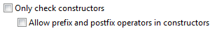
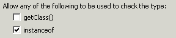
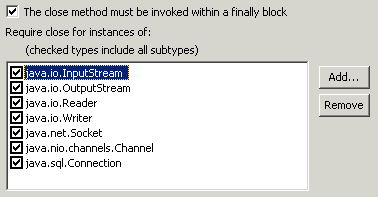
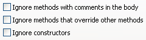
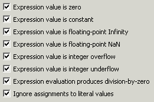
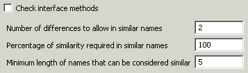
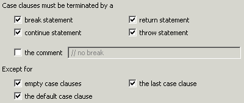
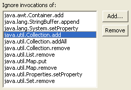
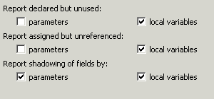

Summary
Two numbers concatenated without any characters in between is probably an error.
Description
This audit rule finds places where two or more numbers are being concatenated without intervening strings or characters. This is usually a mistake caused by forgetting to parenthesize the sub-expression.
Example
The addition of the two integers in the code below would be flagged as a violation:
public String getSummary(int passCount, int failCount) {
return "Of the " + passCount + failCount + " students, "
+ passCount + " passed and " + failCount + " failed.";
}
Summary
Storing of arrays without copying should not be used.
Description
This audit rule looks for places where arrays are stored without copying.
Security Implications
If constructors and methods receive and store arrays without copying, these arrays could be unpredictably changed from outside of the class.
Example
The following declaration of the setArray method will be marked as a violation because it does not copy its parameter:
private String[] array;
....
public void setArray( String[] newArray){
this.array = newArray;
}
Summary
The assignment operator should never be used in a condition.
Description
This audit rule finds places in the code where an assignment operator is used within a condition associated with an if, for, while or do statement. Such uses are often caused by mistyping a single equal (=) where a double equal (==) was intended.
Example if (a = 0) {
...
}
Summary
Static fields should only be changed in static methods.
Description
Assignments to a static field in a non-static context are usually not intended, and therefore usually represent an error.
Example public class Foo {
static int x = 2;
public doSomething(int y) {
x = y;
}
}

Summary
String comparisons should not occur with the output from Class.getName()
Description
This audit rule looks for places where a class name is compared using the methods String.equals or String.equalsIgnoreCase, or the == or != operators.
Specifically, this audit rule flags the following patterns:
[class].getName().equals(*)
*.equals([class].getName())
[class].getName().equalsIgnoreCase(*)
*.equalsIgnoreCase([class].getName())
[class].getName() == *
* == [class].getName()
[class].getName() != *
* != [class].getName()
Where [class] is any instance of java.lang.Class.
Security Implications
By not making comparisons in this way, code is prevented from malicious users creating a class with the same name in order to gain access to blocks of code not intended by the programmer.
Example
The following method invocation of equals would be flagged a violation:
if ("SomeClassName".equals(class.getName())) ...
Summary
Avoid using names that conflict with future keywords.
Description
Words that will be keywords in later versions of Java should not be used as an identifier. Otherwise, you will have to rewrite the code in order to migrate.
Example
Any variable, method, or type named "assert" or "enum" will be flagged.
Summary
Return values should not be null.
Description
This audit rule finds places where null is returned rather than array types or simple types.
Example
The return statement in the following method would be flagged as a violation:
public int[] getRowSums()
{
if (table == null) {
return null;
}
...
}
Summary
Be careful when and how you use the equals() and hashCode() methods of the URL class.
Description
Both the equals() and hashCode() methods of the URL class resolve the domain name using the Internet. This operation can cause unexpected performance problems. Also, the hashCode() method takes the resolved IP address into account when generating the hash code. This can cause serious problems since many web sites use dynamic DNS. It is possible to store a URL in a hashed collection, and later be unable to retrieve it if the URL resolves to a different IP address.
Because of these implementation problems, it is a good idea to convert URLs to URIs before storing them in collections, or using their equals() or hashCode() methods. This can be done easily using URL's toURI() method, and reversed using URI's toURL() method.
This rule finds places where equals() or hashCode() are explicitly invoked on URL objects and places where URL objects are used in hashed Collections classes.
Example
The following would be flagged as a violation:
URL aUrl = new URL("http://address.com");
Set aSet = new HashSet();
aSet.add(aUrl);
Summary
Implementations of equals() should check the type of the parameter.
Description
This audit rule finds implementations of the method equals() that do not check the type of the parameter. The rule can be configured for how the type of the parameter should be checked.
Example
The following declaration of the equals() method would be flagged because the type of the argument is not checked:
public boolean equals(Object other)
{
return getName().equals(((Employee) other).getName());
}

Summary
The method close() should be invoked inside a finally block.
Description
This rule finds places where the method close() is invoked outside of a finally block.
Example
The following invocation would be flagged as a violation because it occurs outside of a finally block:
public void readFile(FileReader reader)
{
...
reader.close();
}
Summary
Streams, readers, writers and sockets should be closed in the method where they are created.
Description
Instances of subclasses of java.io.InputStream, java.io.OutputStream, java.io.Reader, java.io.Writer, and java.net.Socket should be closed in the same method in which they are created in order to avoid errors caused when they are not closed at all.
Example
The creation of a reader in the following method would be flagged as a violation because the reader is not closed:
public void readFile(String filePath)
{
FileReader reader;
reader = new FileReader(new File(filePath));
readFile(reader);
}

Summary
Constants should not be directly compared.
Description
Comparisons of two constant values waste processor cycles.
Example
Given the following declarations:
static final int ZERO = 0;
static final int ONE = 1;
The following condition would be flagged:
if (ZERO != ONE) {
Summary
Values of type short and char should not be directly compared.
Description
Comparisons between short and char values are performed by widening both to the type int and then performing the comparison. However, because shorts are signed and chars are unsigned, this can produce unintended results.
Example
The following would be flagged:
short s;
char c;
if (s == c) ...
Summary
Conditional expressions should usually not be constant valued.
Description
This audit rule looks for conditional expressions in if, do, for, and while statements whose value is a compile-time constant. Because the value of such conditions cannot change, either the conditional code will never execute or will always execute (and in the case of a loop, the loop will never terminate).
Example
The expression in the following code would be flagged as a violation:
if (false) {
thisWillNeverBeExecuted();
}
Summary
Constructors should only invoke final methods on the object being constructed.
Description
Subclasses can override non-final methods. Invoking them from a constructor can cause errors because the object is not in a valid state.
Example
The constructor in the following class would be flagged as a violation:
public class Point
{
...
public Point()
{
x = initialX();
y = initialY();
}
protected int initialX()
{
return 0;
}
...
}
Summary
Use blocks to prevent dangling else clauses.
Description
This audit rule finds places in the code where else clauses are not preceded by a block because these can lead to dangling else errors.
Example if (a > 0)
if (a > 100)
b = a - 100;
else
b = -a;
Summary
Catch clauses should not be empty.
Description
This rule finds places where an exception is caught and nothing is done. It can be configured to allow the existence of a comment to substitute for actual Java code.
Example try {
...
} catch (Exception exception) {
}
Summary
Empty classes should not be declared.
Description
This audit rule checks for class declarations that do not include any members (fields, methods, or inner classes). Such classes usually occur if either the implementation was not finished or if the class was being used as a marker. In the latter case the class should be replaced by an interface.
Example
The following class definition would be flagged as being a violation:
public class EmptyClass
{
}
Summary
Do statements should not be empty.
Description
This rule finds do statements whose body is empty.
Example do {
} while(someCondition());
Summary
The body of an enhanced for loop should never be empty.
Description
This audit rule finds enhanced for loops whose body is empty.
Example for (int count : counts) {
}
Summary
The body of a finalize method should never be empty.
Description
This audit rule finds finalize methods whose body is empty.
Example protected void finalize()
{
}
Summary
Finally clauses should never be empty.
Description
This audit rule finds finally clauses whose block is empty.
Example try {
...
} finally {
}
Summary
The body of a for loop should never be empty.
Description
This audit rule finds for loops whose body is empty.
Example for (int i = 0; i < array.length; i++) {
}
Summary
The clauses of an if statement should never be empty.
Description
This audit rule finds if statements whose then or else clauses are empty.
Example if (this == that) {
}
Summary
The body of an initializer should never be empty.
Description
This audit rule finds initializers whose body is empty.
Example static {
}
Summary
Empty methods should never be used.
Description
Methods with an empty body usually occur only when someone has forgotten to implement the method. This audit rule finds methods whose body is empty.
Example public void doSomething()
{
}

Summary
Empty statements should never be used.
Description
This audit rule finds places where an empty statement occurs within a control structure. (An empty statement is a semicolon appearing alone in a place where a statement is allowed). The existence of an empty statement usually indicates a problem, such as a piece of code that was unintentionally removed or a semicolon added in the wrong place.
Example if (hasBeenAuthenticated);
grantSpecialAccess();
Summary
The body of a switch statement should never be empty.
Description
This audit rule finds switch statements whose body is empty.
Example switch (value) {
}
Summary
Synchronized statements should never be empty.
Description
This audit rule finds empty synchronized statements.
Example synchronized (monitor) {
}
Summary
The body of a try statement should never be empty.
Description
This audit rule finds try statements whose body is empty.
Example try {
} finally {
file.close();
}
Summary
The body of a while statement should never be empty.
Description
This audit rule finds while statements whose body is empty.
Example while (index < count) {
}
Summary
The main() method should be defined as "public static void main(java.lang.String[])".
Description
This audit rule finds main() methods that are not defined as "public static void main(java.lang.String[])". The main() method should only be used as the entry point for a class.
Example
The following method would be flagged as a violation because it is not declared to be a static method:
public void main(String[] args)
{
...
}
Summary
Expression evaluation.
Description
This set of audit rules checks the value of expressions for certain conditions. It detects constant and zero values, divide-by-zero, and others.
Example
The following expression would be flagged as a violation because it always produces the same value:
int secondsPerDay = 24 * 60 * 60;
The following expression would be flagged as a violation because it will always cause a divide by zero exception:
return 23 / 0;

Summary
You should check fields used in methods beacuse they might have null value.
Description
This audit rule looks for references to fields whose value can be null where the value of the field is not checked before being dereferenced.
Security Implications
Use checks on a null pointer because NullPointerException might be thrown.
Example
The following usage of the field date will be marked as a violation beacuse it is not checked:
public class TestClass {
private Date date = null;
public void badUsage() {
String myStr = date.toString();
}
}
Summary
Floating point values should not be used.
Description
This audit rule checks for uses of floating point values. It finds such uses as the declared type of variables, the return type of methods, literal values, references to floating point valued variables, and the invocation of methods that return floating point values. Floating point values should rarely be used because of the potential for rounding errors.
Example
The following declaration would be flagged as a violation:
private float accountBalance;
Summary
Numeric parsing errors should be handled where they occur.
Description
This audit rule finds invocations of methods that parse numeric values from Strings (and hence can throw a NumberFormatException) where the exception is not handled (caught) in the same scope.
Example
The following invocation of parseInt would be flagged because it is not wrapped in a try statement that catches NumberFormatException:
int value = Integer.parseInt("42");
Summary
Because the hashCode() method of an array returns the identityhashCode, this method should not be used to generate hash codes for arrays.
Description
This audit rule looks for invocations of hashCode() on arrays, as well as common functions that will invoke hashCode() on an array.
Example
The following would be flagged as a violation:
new Person[] {
new Person("Alice"),
new Person("Bob"),
new Person("Charlie")
}.hashCode();
Summary
Because the toString() method of an array does not generate useful information, some functions that accept object parameters will display useless results when an array is passed to them.
Description
This audit rule looks for invocations of toString() on arrays, as well as common functions that will convert an array to a String using the toString() method. toString() does not return the contents of the array in a useful format, instead, it generates a string similar to [C@16f0472.
Example
The following would be flagged as a violation:
System.out.println(new Person[] {
new Person("Alice"),
new Person("Bob"),
new Person("Charlie")
});
Summary
You should avoid incompatible casts because a ClassCastException will be thrown.
Description
This audit rule looks for places in the code that cast elements retrieved from a collection to a type that is not compatible with the type of elements being put into that very collection.
Security Implications
Incompatible cast will cause a ClassCastException to be thrown. This could be used to create a potential denial-of-service state or reveal security-sensitive parts of an application's design through the stack trace.
Example
The following invocation of the get() method will be marked as a violation because its return value is cast to a type incompatible with the one being put into collection:
public class MyClass {
...
private List testList;
...
public void myMethod(MyClass obj) {
testList.add(obj);
Integer test = (Integer)testList.get(0);
}
Summary
The Override annotation should be used for all overridden methods.
Description
This audit rule finds classes that use the Override annotation for some overridden methods but not for others and flags those for which it is missing.
Summary
Integers should be converted to floats before division if the result will be converted.
Description
When integer values are divided, any remainder is truncated. If the result of that division is going to be converted to a floating-point value, one of the integers should probably be cast to that same floating-point type in order to avoid the rounding error.
Example
The following division would be flagged as a violation:
int a, b;
float result;
result = a / b;
Summary
Loops should be properly bounded.
Description
This audit rule checks for loops whose initial and/or final values could allow the index to go outside the bounds of the collection being accessed within the body of the loop.
Example
The following loop would allow the loop variable to take on a value of array.length, causing an IndexOutOfBoundsException to be thrown:
for (int i = 0; i <= array.length; i++) {
System.out.println(" [" + i + "] = " + array[i]);
}
Summary
Casting to a lower precision type can cause loss of data.
Description
This audit rule checks for places where one numeric type is being cast to another type of lower precision than the first. Doing so can result in a loss of data, which is generally not desirable.
Example
Given a declaration of the form:
double oneThird = 1.0 / 3.0;
The following expression would be flagged as a violation:
(float) oneThird
Summary
Switch statements should include all possible enumeration constants.
Description
This audit rule checks for the existence of switch statements whose case labels are constants declared by an enum but which do not include all of the declared constants.
Example
Given the following declarations:
private PopcornSize size; public enum PopcornSize {MEDIUM, LARGE, EXTRA_LARGE};
the following switch statement would be flagged as a violation because it does not contain a case label for EXTRA_LARGE:
switch (size) {
case MEDIUM:
promptForUgradeToLarge();
break;
case LARGE:
promptForDrinksAndCandy();
}
Summary
Every switch statement should have a default clause.
Description
This audit rule checks for the existence of a default case within every switch statement.
Example
The following switch statement would be flagged as a violation because it does not contain a "default" case label:
switch (accountType) {
case CHECKING_ACCOUNT:
balance = ((CheckingAccount) account).getCheckingBalance();
break;
case SAVINGS_ACCOUNT:
balance = ((SavingsAccount) account).getSavingsBalance();
}
Summary
Non-instantiable classes should have at least one static method.
Description
If a class has been made non-instantiable by making all constructors private, it should define at least one non-private static method, otherwise the class will be unusable.
Example
The following would be flagged as a violation:
public class Foo {
private Foo() {
}
}
Summary
Every for statement should have an update clause.
Description
This audit rule checks for the existence of an update clause within every for statement. If a for statement does not require an update clause it should be replaced by a while statement.
Example
The following for statement would be flagged as a violation:
for (Iterator i = set.iterator(); i.hasNext(); ) {
Object element = i.next();
...
}
Summary
Methods with incorrectly spelled names do not override the superclass method.
Description
This rule detects small differences in spelling between methods defined in two different types in a hierarchy where both methods have the same parameter lists. Such methods may be intended to be identical but only the superclass method will be invoked.

Summary
Do not invoke the next method if you do not invoke hasNext method before that because NoSuchElementException can be thrown.
Description
This rule looks for places where the next method is invoked without or before the hasNext method.
Security Implications
If the next method is invoked without first invoking the hasNext method, in loop for example, a NoSuchElementException may be thrown.
Example
The following invocation of the next method will be flagged as a violation because the hasNext method is not invoked:
public void myMethod(Collection myList)
{
.......
Iterator iter = myList.iterator();
for (int i = 0; i < 10; i++) {
iter.next();
}
}
Summary
Switch statements should only contain case labels.
Description
This audit rule finds labels other that case labels that appear within a switch statement. Such labels are often the result of forgetting to type the keyword "case" rather than an intent to use a labeled statement. If it isn't the result of an accident, having a labeled statement in a switch statement makes the logic much harder to understand because it can easily be mistaken for a case label.
Example
The statement labeled "SAVINGS_ACCOUNT" would be flagged as a violation:
switch (accountType) {
case CHECKING_ACCOUNT:
balance = ((CheckingAccount) account).getCheckingBalance();
SAVINGS_ACCOUNT:
balance = ((SavingsAccount) account).getSavingsBalance();
}
Summary
Case clauses should never fall through into the following case.
Description
This audit rule checks for the existence of either a break, continue, return, or throw statement at the end of each case clause in a switch statement. The lack of either of these statements means that control will fall through to the next case, which is usually not what is intended. It is possible to configure this rule to also accept a user-defined comment (such as "no break") as a signal that the developer knew what was happening.
Example switch (accountType) {
case CHECKING_ACCOUNT:
balance = ((CheckingAccount) account).getCheckingBalance();
case SAVINGS_ACCOUNT:
balance = ((SavingsAccount) account).getSavingsBalance();
}

Summary
The equals method should always take a parameter of type Object.
Description
This audit rule looks for declarations of the method equals whose single parameter has a declared type different from java.lang.Object. Overloading the equals method can easily lead to situations where a.equals(b) != b.equals(a).
Example public boolean equals(String string)
{
...
}
Summary
Overloading method names can cause confusion and errors.
Description
This audit rule finds methods that are overloaded. Overloaded methods are methods that have the same name and the same number of parameters, but do not have the same types of parameters. Such methods can cause confusion and errors because it is not always obvious which method will be selected at run time.
Example public void process(Person person)
public void process(Employee employee)
Summary
A pointer is being dereferenced when it might be null.
Description
This rule identifies places where an object-valued variable is being dereferenced without first ensuring that it cannot be null.
Example
Given the following method declaration:
public String[] split(String string)
{
int index = string.indexOf(":");
...
}
The invocation of the indexOf method would be flagged.
Summary
Some loops can be written in such a way that they will never terminate. This is bad practice, and usually not intended.
Description
Loops can exit in several ways. Either their exit condition can be satisfied, an exception can be thrown, a value can be returned, or a break or a continue can transfer control out of the loop. In the body of the loop, something should happen to either modify the value of the exit condition, or modify the value of a condition leading to a return, throw, or branching statement.
Example
The following would be flagged as a violation, since the value of a is not changed in the body of the loop.
int a = 0; int b = 2;
while (a < 10) {
b++;
}
Summary
Don't recursively call a method without a conditional check.
Description
This audit rule flags methods that recursively call themselves with no conditional check, or return escape. Violations are either infinite loops, or the logic of the method relies on exceptions being thrown. In the first case the infinite loop needs to be removed. In the second case, thrown exceptions should not be relied on as they are much more expensive than writing the equivalent conditional.
Example private void countDownToZero(int i) {
System.out.print("i = " + i);
i--;
countDownToZero(i);
// never reached!
if(i == 0) {
return;
}
}
Summary
A single variable should not be assigned the same value multiple times.
Description
This audit rule checks for multiple assignments of the same value to a single variable within the same statement.
Example
The following assignment would be flagged because the variable x is assigned the same value twice:
x = y = x = 0;
Summary
Finally blocks should not contain a return statement.
Description
This audit rule finds places where a return statement is contained in a finally block.
Example
The following return statement would be flagged as a violation:
try {
...
} finally {
return 0;
}
return array.length;
Summary
Don't compare output from String.indexOf with > 0 or <= 0.
Description
This audit rule looks for the common off-by-one-error caused by comparing String.indexOf() to 0, for example: "indexOf(..) > 0." This is read as "if indexOf is greater than 0 then the there doesn't exist an instance of what we are looking for", but the mistake here is that indexOf returns -1 if nothing was found, not 0. Hence, the user meant ">=", not ">". The opposite mistake is made with "indexOf <= 0."
All "indexOf" methods in java.lang.String are detected by this rule, see indexOf(int), indexOf(int, int), lastIndexOf(int), lastIndexOf(int, int), indexOf(String), etc.
Example
The following comparison would be flagged as a violation:
str.indexOf('.') > 0
Summary
If you want to override a method declared in a superclass, you should not change the signature of a method which belongs to the subclass.
Description
This rule looks for places where a method of defined in a subclass has the same name as a method defined in a superclass but a different signature.
Security Implications
If you want to override the method in the superclass, you should change signature method which belongs to subclass.
Example
The following invocation method which belongs to subclass will be flagged as a violation because a signatures do not match.
public class Parent
{
public void func(int a) {
.........
}
} public class Child extends Parent
{
public void func(double a) {
...
}
}
Summary
Finally blocks should not contain a throw statement.
Description
This audit rule finds places where a throw statement is contained in a finally block.
Example
The following throw statement would be flagged as a violation because it occurs within a finally block:
try {
...
} finally {
throw new Exception("This is never OK");
}
Summary
Private fields should be assigned a value.
Description
This audit rule looks for private fields that are never assigned a value.
Summary
Unnecessary instanceof tests should be removed.
Description
This audit rule looks for unnecessary uses of "instanceof". An "instanceof" test against a superclass or superinterface of the static type of an object is unnecessary and should be removed.
Example "this is a string" instanceof String;
Summary
A variable is being checked against null when it is not necessary.
Description
This rule identifies places where an object-valued variable is being compared to null when the comparison is unnecessary because of preceding code.
Example
The following comparison would be flagged as a violation:
airplane.prepareForTakeOff();
if (airplane != null) ...
Summary
Methods that do not return a value should not end with a return.
Description
This audit rule finds methods that are declared to not return a value (void) but whose last statement is a return statement.
Example public void markChanged()
{
changed = true;
return;
}
Summary
The value returned from methods should be used.
Description
This audit rule looks for invocations of methods that return values where the value is ignored. Most methods that return a value either have no side-effect or are using the returned value as an indication of success or failure. In the first case, the invocation should be removed if the value is not needed. In the second case, the status value should be checked.
Example
The following method invocation would be flagged as a violation if the method getX returns a value:
point.getX();

Summary
The contents of a StringBuffer should be used.
Description
This audit rule checks for any instances of the class StringBuffer whose contents are not retrieved. This usually means that the code to use the contents of the buffer was omitted, but can also indicate that old code is no longer needed and should have been deleted.
Example
The StringBuffer declared in the following method would be flagged as a violation:
private String toString()
{
StringBuffer buffer;
buffer = new StringBuffer();
buffer.append("Product #");
buffer.append(getName());
return getName();
}
Summary
The contents of a StringBuilder should be used.
Description
This audit rule checks for any instances of the class StringBuilder whose contents are not retrieved. This usually means that the code to use the contents of the builder was omitted, but can also indicate that old code is no longer needed and should have been deleted.
Example
The StringBuilder declared in the following method would be flagged as a violation:
private String toString()
{
StringBuilder builder;
builder = new StringBuilder();
builder.append("Product #");
builder.append(getName());
return getName();
}
Summary
You should use short-circuit operations instead of binary operations.
Description
This rule looks for places where a binary operation is used that could be replaced by a short-circuit operator.
Security Implications
Usage of binary operation instead of short-circuit can cause unexpected situation when RuntimeException or NullPointerException can be thrown.
Example
The following code would be flagged as a violation because a binary and operator (&) is used where a conditional-and operator (&&) could be used:
public void func(int[] a)
{
if (a != null & a.length() != 0) {
doSomething();
}
}
Summary
A null value should not be compared using methods equals() or equalsIgnoreCase().
Description
This audit rule finds places where an object is compared to the null value using either the equals() or (if the object is a String) the equalsIgnoreCase() method. In both cases, the contract of the method requires this comparison to always return false. Either the test is unnecessary, or it should be replaced by an identity comparison.
Example
The following comparison would be flagged as a violation:
if (object.equals(null))
Summary
A variable that is guaranteed to have a null value and is used in an expression may indicate that the programmer forgot to initialize variable with its actual value.
Description
This rule looks for a places where variables with null values are used in an expression.
Security Implications
Such an error may indicate a flaw in the program's logic that may leave the software vulnerable if present in the security-sensitive part of an application.
Example
The following usage of variable should be marked as violation because the variable is always null:
public boolean myMethod(String param)
{
String tmp = null;
if (tmp.equals(param)) {
return true;
} else {
return false;
}
}
Summary
Variables should never shadow variables with the same name that are defined in an outer scope.
Description
This audit rule checks for any declarations of variables that shadow a variable with the same name that is defined in an outer scope.
Example
In a class with a field declaration such as:
private int inventoryCount;
the following parameter would be flagged as a violation:
public void printInventory(int inventoryCount)
